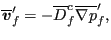
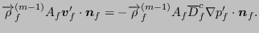

The size of the fields reserved for material description is governed by the scalars nmat_, nmat, ncmat_, ntmat_ and npmat_. Their meaning:
An elastic material is described by the two-dimensional integer field nelcon and three-dimensional real field elcon. For material i, nelcon(1,i) contains for linear elastic materials the number of elastic constants. For hyperelastic materials and the elastic regime of viscoplastic materials nelcon(1,i) contains an integer code uniquely identifying the material. The code reads a follows:
Notice that elconloc is also used to store
Entry nelcon(2,i) contains the number of temperature points for material i.
The field elcon is used for the storage of the elastic constants: elcon(0,j,i) contains the temperature at the (hyper)elastic temperature point j of material i, elcon(k,j,i) contains the (hyper)elastic constant k at temperature point j of material i. Notice that the first index of field elcon starts at zero.
Suppose only one material is defined:
*MATERIAL,NAME=EL *ELASTIC 210000.,.3,293. 200000.,.29,393. 180000.,.27,493.
then the fields nelcon and elcon look like:
| nelcon elcon | (521) |
and nmat=1, ntmat_ = 3, ncmat_=2.
Other material properties are stored in a very similar way. The expansion coefficients are stored in fields nalcon and alcon, the conductivity coefficients in fields ncocon and cocon. The density and specific heat are stored in fields nrhcon, rhcon, nshcon and shcon, respectively. Furthermore, the specific gas constant is also stored in shcon. The fields nrhcon and nshcon are only one-dimensional, since there is only one density and one specific heat constant per temperature per material (the specific gas constant is temperature independent).
The isotropic hardening curves for viscoplastic materials are stored in the two-dimensional integer field nplicon and the three-dimensional real field plicon. The entry nplicon(0,i) contains the number of temperature data points for the isotropic hardening definition of material i, whereas nplicon(j,i) contains the number of stress-strain data points at temperature point j of material i. Entry plicon(2*k-1,j,i) contains the stress corresponding to stress-plastic strain data point k at temperature data point j of material i, plicon(2*k,j,i) contains the plastic strain corresponding to stress-plastic strain data point k at temperature data point j of material i. Similar definitions apply for the kinematic hardening curves stored in nplkcon and plkcon.